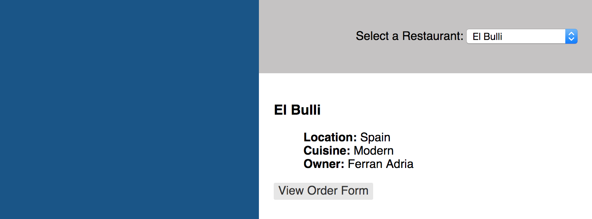

The next item we're going to go over is can.Model.
Models make interacting with JSON REST services really easy. They do this by
encapsulating most of the code required to connect to a service and managing
the data the service returns. Additionally, can.Model extends
can.Map, meaning that the objects returned have all of
the features of a can.Map, such as being observable.
We'll use a can.Model to provide data for our restaurant list.
In the models folder, create a file called site_models.js and add the
following code:
var RestaurantModel = can.Model.extend({
findAll: 'GET /restaurants'
}, {
// Include second, empty parameter object to set instanceProperties
});
Because it is a can.Construct, can.Model.extend
can take up to three parameters:
name
staticProperties
instanceProperties
A can.Model's staticProperties parameter has several reserved properties you
can add that simplify accessing data from a JSON REST service. These
properties are:
findAll
findOne
create
update
destroy
The find*, create, update, and destroy functions are available directly
off of the object definition (i.e., they are static). The destroy function is
available off of specific instances of a can.Model. We'll see how to
use these below.
Reminder: The number of parameters you pass in to an extend function is
important. If you pass in a single parameter object, the extend function will
use that to set the instanceProperties. If you pass in two parameter
objects, the first object passed in will be used to set the
staticProperties. The second parameter will be used to set the
instanceProperties. Here, we only want to set the staticProperties, so we
must pass in a second, empty object.
A few examples illustrate this, below:
var MyModel = can.Model.extend({
findAll: function () {
// Static function
}
}, {
destroy: function () {
// Instance function
}
});
MyModel.findAll(); // Reference a function defined on the constructor
var modelInstance = new MyModel();
modelInstance.destroy(); // Reference a function defined on the prototype
The Data for Our Model
We're not going to connect to a server to retrieve our data; however, we're
going to code our model as if we were. How can this possibly work? CanJS
provides a handy utility, can.fixture, that we can use to easily mimic the
functionality of connecting to a server. can.fixture
intercepts an AJAX request and simulates the response with a file or a
function. You can use can.fixture to develop JavaScript independently of
backend services.
can.fixture is not included with the base CanJS package. It's a good practice
to keep it separate from your production CanJS library, which is why we
downloaded and used it a separate script tag, rather than including it
with our custom download. If you use can.fixture during development, remember
to remove it once you need to connect to your REST services.
Let's create a fixture that will respond to our requests for menu item data.
Create another file in the models folder called fixtures.js. Add the
following code to that file:
The first argument to can.fixture, GET /restaurants, tells CanJS to
intercept any GET requests to the resource /restaurants. The second argument
is a function that returns the data we want to get when the application makes
a service call. Because we're simulating a findAll function, we need to return
an array. The findAll function expects an array. By default, if it does not
receive one, it will throw an error. If you need to connect to services that
return data that doesn't match the expected return type of the find*
functions, don't fret. There are ways to manage this, which we'll work with
later on.
Connecting the Model to the Component
It's time to connect all of this together in our view model. Simply open up
restaurant_list.js. Edit the RestaurantListViewModel as follows,
updating the restaurants property to receive data from the model we created:
var RestaurantListViewModel = can.Map.extend({
restaurants: new RestaurantModel.List({}),
// ...
});
Note that there are a few ways to call a findAll function on a can.Model. The
first way is to call the function explicitly. Using the RestaurantModel as an
example, that would look like this:
We also have the ability to use can.Deferred, which allows us to chain
callback functions off of each other. You can read more about this from the
jQuery API. Using this
method, we could write our findAll like this:
RestaurantModel.findAll({ /* paramsObject */ })
/* When the API call succeeds, .done() is called */
.done(function(returnedObject) {
// ...
})
/* When the API call errors, .fails() is called */
.fail(function(errorObject) {
// ...
});
Both are acceptable, but throughout the guide we will use the Deferred method
as it more explicitly states which callback function is which.
In the code above, however, we called the findAll function indirectly:
restaurants: new RestaurantModel.List({}),
This is a special feature of the can.Model.List constructor. If you create a
new instance of a can.Model.List and you pass the constructor a plain
JavaScript object, that List's constructor parameter will be passed to the
can.Model's findAll function. The findAll function will run and the list will
be populated with the results of the findAll function, as shown below
1:
Finally, let's add the scripts we created to our index.html file:
In this Chapter
can.Modelcan.fixturecan.Models withcan.ComponentsGet the code for: chapter 4
The next item we're going to go over is can.Model. Models make interacting with JSON REST services really easy. They do this by encapsulating most of the code required to connect to a service and managing the data the service returns. Additionally,
can.Modelextends can.Map, meaning that the objects returned have all of the features of acan.Map, such as being observable.We'll use a
can.Modelto provide data for our restaurant list.In the
modelsfolder, create a file calledsite_models.jsand add the following code:Because it is a can.Construct,
can.Model.extendcan take up to three parameters:namestaticPropertiesinstancePropertiesA
can.Model'sstaticPropertiesparameter has several reserved properties you can add that simplify accessing data from a JSON REST service. These properties are:findAllfindOnecreateupdatedestroyThe
find*,create,update, anddestroyfunctions are available directly off of the object definition (i.e., they are static). Thedestroyfunction is available off of specific instances of acan.Model. We'll see how to use these below.Reminder: The number of parameters you pass in to an
extendfunction is important. If you pass in a single parameter object, theextendfunction will use that to set theinstanceProperties. If you pass in two parameter objects, the first object passed in will be used to set thestaticProperties. The second parameter will be used to set theinstanceProperties. Here, we only want to set thestaticProperties, so we must pass in a second, empty object.A few examples illustrate this, below:
The Data for Our Model
We're not going to connect to a server to retrieve our data; however, we're going to code our model as if we were. How can this possibly work? CanJS provides a handy utility,
can.fixture, that we can use to easily mimic the functionality of connecting to a server.can.fixtureintercepts an AJAX request and simulates the response with a file or a function. You can usecan.fixtureto develop JavaScript independently of backend services.can.fixtureis not included with the base CanJS package. It's a good practice to keep it separate from your production CanJS library, which is why we downloaded and used it a separate script tag, rather than including it with our custom download. If you usecan.fixtureduring development, remember to remove it once you need to connect to your REST services.Let's create a fixture that will respond to our requests for menu item data. Create another file in the
modelsfolder calledfixtures.js. Add the following code to that file:The first argument to
can.fixture,GET /restaurants, tells CanJS to intercept anyGETrequests to the resource/restaurants. The second argument is a function that returns the data we want to get when the application makes a service call. Because we're simulating afindAllfunction, we need to return an array. ThefindAllfunction expects an array. By default, if it does not receive one, it will throw an error. If you need to connect to services that return data that doesn't match the expected return type of thefind*functions, don't fret. There are ways to manage this, which we'll work with later on.Connecting the Model to the Component
It's time to connect all of this together in our view model. Simply open up
restaurant_list.js. Edit theRestaurantListViewModelas follows, updating the restaurants property to receive data from the model we created:Note that there are a few ways to call a
findAllfunction on acan.Model. The first way is to call the function explicitly. Using theRestaurantModelas an example, that would look like this:We also have the ability to use
can.Deferred, which allows us to chain callback functions off of each other. You can read more about this from the jQuery API. Using this method, we could write ourfindAlllike this:Both are acceptable, but throughout the guide we will use the Deferred method as it more explicitly states which callback function is which.
In the code above, however, we called the
findAllfunction indirectly:This is a special feature of the
can.Model.Listconstructor. If you create a new instance of acan.Model.Listand you pass the constructor a plain JavaScript object, that List's constructor parameter will be passed to thecan.Model'sfindAllfunction. ThefindAllfunction will run and the list will be populated with the results of thefindAllfunction, as shown below 1:Finally, let's add the scripts we created to our
index.htmlfile:Let's go back to our app now and see what happens! If everything went according to plan, you should see something like this:
And, when you select a restaurant from the list, you should see:

1: At first, the
Model.List({})will be empty; however, thecan.Model'sfindAllmethod will then be called and the list will be populated with the results of that call once thefindAllmethod completes asynchronously. Because this property was bound in the template, two-way binding will update the DOM with the results. ↩‹ More on Components Sending Data to a Service ›